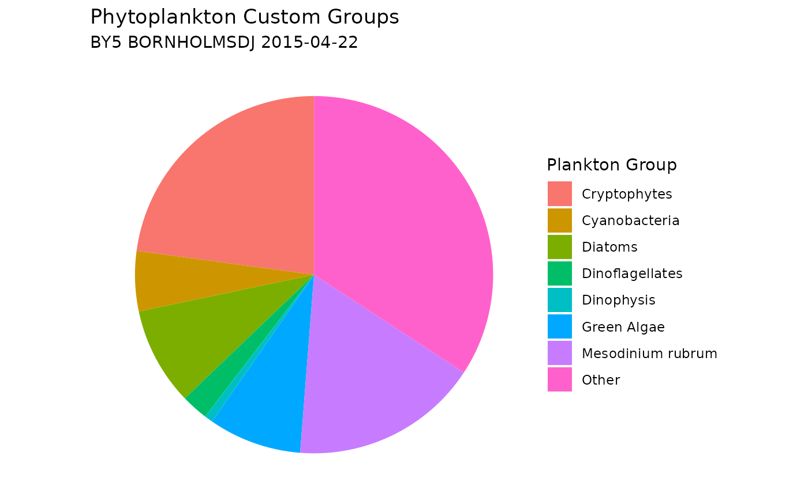

Retrieve Taxonomic Data From WoRMS
Source:vignettes/retrieve_worms_data.Rmd
retrieve_worms_data.RmdWoRMS
The World Register of Marine Species (WoRMS) is a comprehensive
database providing authoritative lists of marine organism names, managed
by taxonomic experts. It combines data from the Aphia database and other
sources like AlgaeBase and FishBase, offering species names, higher
classifications, and additional data. WoRMS is continuously updated and
maintained by taxonomists. In this tutorial, we source the R package worrms
to access WoRMS data for our function. Please note that the authors of
SHARK4R are not affiliated with WoRMS.
Retrieve Data Using SHARK4R
Retrieve Phytoplankton Data From SHARK
Phytoplankton data, including scientific names and AphiaIDs, are downloaded from SHARK. To see more download options, please visit the Retrieve Data From SHARK tutorial.
# Retrieve all phytoplankton data from April 2015
shark_data <- get_shark_data(fromYear = 2015,
toYear = 2015,
months = 4,
dataTypes = "Phytoplankton",
verbose = FALSE)Match Taxa Names
Taxon names can be matched with the WoRMS API to retrieve Aphia IDs
and corresponding taxonomic information. The
match_worms_taxa() function incorporates retry logic to
handle temporary failures, ensuring that all names are processed
successfully.
# Find taxa without Aphia ID
no_aphia_id <- shark_data %>%
filter(is.na(aphia_id))
# Randomly select taxa with missing aphia_id
taxa_names <- sample(unique(no_aphia_id$scientific_name),
size = 10,
replace = TRUE)
# Match taxa names with WoRMS
worms_records <- match_worms_taxa(unique(taxa_names),
fuzzy = TRUE,
best_match_only = TRUE,
marine_only = TRUE,
verbose = FALSE)
# Print result
print(worms_records)## # A tibble: 4 × 29
## name status AphiaID rank scientificname url authority unacceptreason
## <chr> <chr> <int> <chr> <chr> <chr> <chr> <chr>
## 1 Unicell no co… NA NA NA NA NA NA
## 2 Scrippsiel… accep… 109545 Genus Scrippsiella http… Balech e… NA
## 3 Cylindroth… accep… 149004 Spec… Cylindrotheca… http… (Ehrenbe… NA
## 4 Diplopsalis accep… 109515 Genus Diplopsalis http… R.S.Berg… NA
## # ℹ 21 more variables: taxonRankID <int>, valid_AphiaID <int>,
## # valid_name <chr>, valid_authority <chr>, parentNameUsageID <int>,
## # originalNameUsageID <int>, kingdom <chr>, phylum <chr>, class <chr>,
## # order <chr>, family <chr>, genus <chr>, citation <chr>, lsid <chr>,
## # isMarine <int>, isBrackish <int>, isFreshwater <int>, isTerrestrial <int>,
## # isExtinct <lgl>, match_type <chr>, modified <chr>Get WoRMS records from AphiaID
Taxonomic records can also be retrieved using Aphia IDs, employing
the same retry and error-handling logic as the
match_worms_taxa() function.
# Randomly select ten Aphia IDs
aphia_ids <- sample(unique(shark_data$aphia_id),
size = 10)
# Remove NAs
aphia_ids <- aphia_ids[!is.na(aphia_ids)]
# Retrieve records
worms_records <- get_worms_records(aphia_ids,
verbose = FALSE)
# Print result
print(worms_records)## # A tibble: 10 × 28
## AphiaID url scientificname authority status unacceptreason taxonRankID
## <int> <chr> <chr> <chr> <chr> <lgl> <int>
## 1 1310442 https://w… Octactis spec… (Ehrenbe… accep… NA 220
## 2 146715 https://w… Aphanothece Nägeli, … accep… NA 180
## 3 837459 https://w… Tripos lineat… (Ehrenbe… accep… NA 220
## 4 134529 https://w… Pyramimonas Schmarda… accep… NA 180
## 5 575737 https://w… Binuclearia l… (Schmidl… accep… NA 220
## 6 110153 https://w… Heterocapsa t… (Ehrenbe… unacc… NA 220
## 7 148899 https://w… Bacillariophy… Haeckel,… accep… NA 60
## 8 106287 https://w… Hemiselmis Parke, 1… accep… NA 180
## 9 249711 https://w… Desmodesmus (R.Choda… accep… NA 180
## 10 109553 https://w… Protoperidini… Bergh, 1… accep… NA 180
## # ℹ 21 more variables: rank <chr>, valid_AphiaID <int>, valid_name <chr>,
## # valid_authority <chr>, parentNameUsageID <int>, originalNameUsageID <int>,
## # kingdom <chr>, phylum <chr>, class <chr>, order <chr>, family <chr>,
## # genus <chr>, citation <chr>, lsid <chr>, isMarine <int>, isBrackish <int>,
## # isFreshwater <int>, isTerrestrial <int>, isExtinct <lgl>, match_type <chr>,
## # modified <chr>Get WoRMS Taxonomy
SHARK sources taxonomic information from Dyntaxa, which is reflected in columns
starting with taxon_xxxxx. Equivalent columns based on
WoRMS can be retrieved using the add_worms_taxonomy()
function.
# Retrieve taxonomic table
worms_taxonomy <- add_worms_taxonomy(aphia_ids,
verbose = FALSE)
# Print result
print(worms_taxonomy)## # A tibble: 10 × 10
## aphia_id worms_scientific_name worms_kingdom worms_phylum worms_class
## <dbl> <chr> <chr> <chr> <chr>
## 1 1310442 Octactis speculum Chromista Ochrophyta Dictyochoph…
## 2 146715 Aphanothece Bacteria Cyanobacteria Cyanophyceae
## 3 837459 Tripos lineatus Chromista Myzozoa Dinophyceae
## 4 134529 Pyramimonas Plantae NA Pyramimonad…
## 5 575737 Binuclearia lauterbornii Plantae NA Ulvophyceae
## 6 110153 Heterocapsa triquetra Chromista Myzozoa Dinophyceae
## 7 148899 Bacillariophyceae Chromista Heterokontophyta Bacillariop…
## 8 106287 Hemiselmis Chromista Cryptophyta Cryptophyce…
## 9 249711 Desmodesmus Plantae NA Chlorophyce…
## 10 109553 Protoperidinium Chromista Myzozoa Dinophyceae
## # ℹ 5 more variables: worms_order <chr>, worms_family <chr>, worms_genus <chr>,
## # worms_species <chr>, worms_hierarchy <chr>Retrieve WoRMS Taxonomic Hierarchies
To explore the full hierarchical taxonomy records of your Aphia IDs,
you can use the get_worms_taxonomy_tree() function. This
function retrieves records for the entire taxonomic tree from WoRMS,
including parent-child relationships, and can optionally fetch all
descendants (e.g. species) under a genus or known synonyms.
# Retrieve taxonomic tree
worms_tree <- get_worms_taxonomy_tree(
aphia_ids[1], # use first id only in this example
add_descendants = FALSE, # only retrieve hierarchy for given AphiaIDs
add_synonyms = FALSE, # do not retrieve synonyms
verbose = FALSE # suppress progress messages
)
# Print result
print(worms_tree)## # A tibble: 9 × 28
## AphiaID url scientificname authority status unacceptreason taxonRankID rank
## <int> <chr> <chr> <chr> <chr> <lgl> <int> <chr>
## 1 7 http… Chromista NA accep… NA 10 King…
## 2 582419 http… Harosa NA accep… NA 20 Subk…
## 3 368898 http… Heterokonta NA accep… NA 25 Infr…
## 4 345465 http… Ochrophyta Cavalier… accep… NA 30 Phyl…
## 5 146232 http… Dictyochophyc… P.C. Sil… accep… NA 60 Class
## 6 157256 http… Dictyochales Haeckel,… accep… NA 100 Order
## 7 157257 http… Dictyochaceae Lemmerma… accep… NA 140 Fami…
## 8 369960 http… Octactis J.Schill… accep… NA 180 Genus
## 9 1310442 http… Octactis spec… (Ehrenbe… accep… NA 220 Spec…
## # ℹ 20 more variables: valid_AphiaID <int>, valid_name <chr>,
## # valid_authority <chr>, parentNameUsageID <int>, originalNameUsageID <int>,
## # kingdom <chr>, phylum <chr>, class <chr>, order <chr>, family <chr>,
## # genus <chr>, citation <chr>, lsid <chr>, isMarine <int>, isBrackish <int>,
## # isFreshwater <int>, isTerrestrial <int>, isExtinct <lgl>, match_type <chr>,
## # modified <chr>Assign Phytoplankton Groups
Phytoplankton data are often categorized into major groups such as Dinoflagellates, Diatoms, Cyanobacteria, and Others. This grouping can be achieved by referencing information from WoRMS and assigning taxa to these groups based on their taxonomic classification, as demonstrated in the example below.
# Subset data from one national monitoring station
nat_stations <- shark_data %>%
filter(station_name %in% c("BY5 BORNHOLMSDJ"))
# Randomly select one sample from the nat_stations
sample <- sample(unique(nat_stations$shark_sample_id_md5), 1)
# Subset the random sample
shark_data_subset <- shark_data %>%
filter(shark_sample_id_md5 == sample)
# Assign groups by providing both scientific name and Aphia ID
plankton_groups <- assign_phytoplankton_group(
scientific_names = shark_data_subset$scientific_name,
aphia_ids = shark_data_subset$aphia_id,
verbose = FALSE)
# Print result
distinct(plankton_groups)## # A tibble: 23 × 2
## scientific_name plankton_group
## <chr> <chr>
## 1 Pauliella taeniata Diatoms
## 2 Amylax triacantha Dinoflagellates
## 3 Aphanocapsa Cyanobacteria
## 4 Aphanothece Cyanobacteria
## 5 Chaetoceros similis Diatoms
## 6 Dinobryon balticum Other
## 7 Dinophysis acuminata Dinoflagellates
## 8 Dinophysis norvegica Dinoflagellates
## 9 Gymnodinium Dinoflagellates
## 10 Protodinium simplex Other
## # ℹ 13 more rows
# Add plankton groups to data and summarize abundance results
plankton_group_sum <- shark_data_subset %>%
mutate(plankton_group = plankton_groups$plankton_group) %>%
filter(parameter == "Abundance") %>%
group_by(plankton_group) %>%
summarise(sum_plankton_groups = sum(value, na.rm = TRUE))
# Plot a pie chart
ggplot(plankton_group_sum,
aes(x = "", y = sum_plankton_groups, fill = plankton_group)) +
geom_col(width = 1) +
coord_polar(theta = "y") +
labs(
title = "Phytoplankton Groups",
subtitle = paste(unique(shark_data_subset$station_name),
unique(shark_data_subset$sample_date)),
fill = "Plankton Group"
) +
theme_void() +
theme(plot.background = element_rect(fill = "white", color = NA))
Assign Custom Phytoplankton Groups
You can add custom plankton groups by using the
custom_groups parameter, allowing flexibility to categorize
plankton based on specific taxonomic criteria. Please note that the
order of the list matters: taxa are assigned to the last matching group.
For example: Mesodinium rubrum will be excluded from the Ciliates group
because it appears after Ciliates in the list in the example below.
# Define custom plankton groups using a named list
custom_groups <- list(
"Cryptophytes" = list(class = "Cryptophyceae"),
"Green Algae" = list(class = c("Trebouxiophyceae",
"Chlorophyceae",
"Pyramimonadophyceae"),
phylum = "Chlorophyta"),
"Ciliates" = list(phylum = "Ciliophora"),
"Mesodinium rubrum" = list(scientific_name = "Mesodinium rubrum"),
"Dinophysis" = list(genus = "Dinophysis")
)
# Assign groups by providing scientific name only, and adding custom groups
plankton_groups <- assign_phytoplankton_group(
scientific_names = shark_data_subset$scientific_name,
custom_groups = custom_groups,
verbose = FALSE)
# Add new plankton groups to data and summarize abundance results
plankton_custom_group_sum <- shark_data_subset %>%
mutate(plankton_group = plankton_groups$plankton_group) %>%
filter(parameter == "Abundance") %>%
group_by(plankton_group) %>%
summarise(sum_plankton_groups = sum(value, na.rm = TRUE))
# Plot a new pie chart, including the custom groups
ggplot(plankton_custom_group_sum,
aes(x = "", y = sum_plankton_groups, fill = plankton_group)) +
geom_col(width = 1) +
coord_polar(theta = "y") +
labs(
title = "Phytoplankton Custom Groups",
subtitle = paste(unique(shark_data_subset$station_name),
unique(shark_data_subset$sample_date)),
fill = "Plankton Group"
) +
theme_void() +
theme(plot.background = element_rect(fill = "white", color = NA))Citation
## To cite package 'SHARK4R' in publications use:
##
## Lindh, M. and Torstensson, A. (2026). SHARK4R: Accessing and
## Validating Marine Environmental Data from 'SHARK' and Related
## Databases. R package version 1.0.3.
## https://CRAN.R-project.org/package=SHARK4R
##
## A BibTeX entry for LaTeX users is
##
## @Manual{,
## title = {SHARK4R: Accessing and Validating Marine Environmental Data from 'SHARK' and Related Databases},
## author = {Markus Lindh and Anders Torstensson},
## year = {2026},
## note = {R package version 1.0.3},
## url = {https://CRAN.R-project.org/package=SHARK4R},
## }